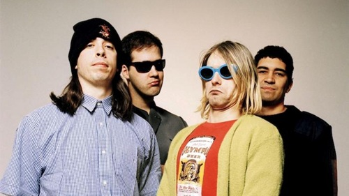
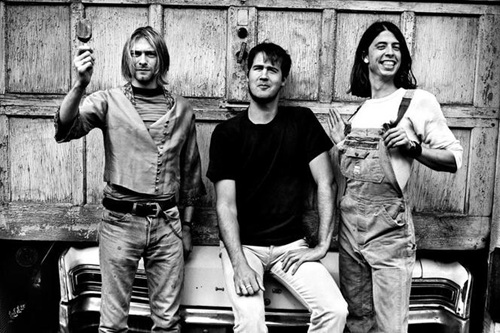

Ao final dos anos 80, os jovens amigos Kurt Cobain e Krist Novoselic resolvem montar uma banda. O cenário era o início do movimento grunge em Seattle e arredores. As guitarras distorcidas e a aparência suja casou exatamente com a ideia dos garotos.
Em 1989, após pegar dinheiro emprestado com um amigo, a banda já batizada como Nirvana grava seu primeiro álbum de estúdio, Bleach, com o baterista Chad Channing. Mesmo com um grande sucesso no meio underground, o baterista Chad acabou dando o fora. Kurt e Krist então foram atrás de um outro baterista, e então, conheceram Dave Grohl e a banda foi ficando popular.
|  |  | |
|
| |